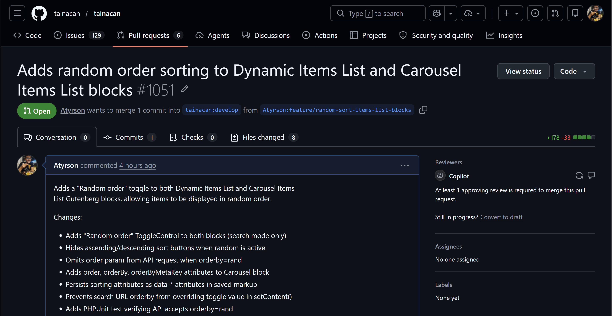

Diário de Bordo – Sprint 6
Informações da Sprint
| Item | Descrição |
|---|---|
| Sprint | Sprint 6 |
| Data de Início | 19/06/2026 |
| Data de Término | 30/06/2026 |
| Responsável | Atyrson Souto |
Objetivo da Sprint
Esta sprint foi dedicada à fase de revisão de código da Pull Request #1051 – Adds random order sorting to Dynamic Items List and Carousel Items List blocks, submetida na sprint anterior. O foco principal foi analisar o feedback recebido do mantenedor do Tainacan e do Copilot AI, compreender cada apontamento e traçar o plano de correções necessário para que a PR seja aprovada e mesclada ao repositório oficial.
Planejamento e Atividades da Sprint
O trabalho consistiu em ler cada comentário da revisão, verificar o código apontado, entender a raiz do problema e documentar a solução proposta para cada caso.
| Atividade | Status |
|---|---|
| Analisar o feedback do mantenedor (mateuswetah) na PR #1051 | ✔️ |
| Analisar os 5 comentários do Copilot AI na PR #1051 | ✔️ |
| Compreender o conceito de depreciação de blocos Gutenberg (deprecated.js) | ✔️ |
| Mapear soluções para cada apontamento | ✔️ |
| Revisar código-fonte dos arquivos envolvidos para validar os apontamentos | ✔️ |
Ferramentas e Tecnologias Utilizadas
| Ferramenta / Tecnologia | Finalidade |
|---|---|
| GitHub (Pull Requests) | Acompanhamento dos comentários e interação com o mantenedor |
| VS Code | Análise do código-fonte dos arquivos envolvidos |
| WordPress Developer Documentation | Consulta sobre o mecanismo de depreciação de blocos Gutenberg |
Atividades Realizadas em Detalhes
1. Contextualização e recebimento da revisão
A PR #1051, que implementa a ordenação aleatória nos blocos Dynamic Items List e Carousel Items List, recebeu feedback do mantenedor mateuswetah e da ferramenta Copilot AI. O mantenedor validou que o código funciona corretamente em seus testes, mas solicitou alterações antes do merge.

2. Análise do feedback do mantenedor
O mantenedor destacou que a complexidade da tarefa foi maior do que aparentava inicialmente, especialmente devido à adição de lógica de ordenação ao bloco Carousel (que antes não possuía esses atributos) e ao tratamento de remoção do campo order quando orderby=rand. Sobre os comentários do Copilot, o mantenedor orientou que a maioria deveria ser considerada, com exceção do último (sobre extrair um helper compartilhado para a lógica de sorting), que ele considerou não necessário no momento.
3. Pedido crítico: Depreciação de bloco (deprecated.js)
O apontamento mais importante veio diretamente do mantenedor. Ao adicionar três novos atributos ao block.json do Carousel Items List (order, orderBy, orderByMetaKey) e novos data-* no save.js, blocos que foram inseridos em páginas antes desta alteração passam a apresentar erro de validação no editor, pois o WordPress detecta que o markup salvo não corresponde aos atributos esperados.
A solução exigida é adicionar uma nova entrada no array do arquivo deprecated.js, contendo o estado anterior dos atributos, supports e da função save — sem os três novos campos. Isso instrui o editor Gutenberg a reconhecer e migrar automaticamente os blocos antigos, sem quebra de layout.
O mantenedor incluiu capturas de tela mostrando o erro que ocorre quando a depreciação está ausente: o bloco exibe uma mensagem de erro no editor e o console do navegador reporta um número incorreto de atributos esperados.
Arquivo a ser modificado: src/views/gutenberg-blocks/blocks/carousel-items-list/deprecated.js
Solução proposta:
- Copiar o objeto atual de
attributes,supportsesave(antes da adição dos três novos atributos) do último registro de depreciação; - Criar uma nova entrada no início do array de depreciações com esses valores, garantindo que os atributos
order,orderByeorderByMetaKeynão estejam presentes; - A função
savedessa entrada de depreciação também não deve conter osdata-order,data-order-byedata-order-by-meta-keyno markup.
4. Análise dos comentários do Copilot AI
O Copilot AI gerou 5 comentários em arquivos distintos. Abaixo, a análise de cada um:
C1 – Condição permissiva em theme.vue
Arquivo: src/views/gutenberg-blocks/blocks/carousel-items-list/theme.vue
O código atual verifica apenas this.order != undefined antes de setar queryObject.order. Porém, theme.js inicializa order como '' (string vazia). Isso significa que, mesmo quando nenhuma ordenação foi configurada, uma string vazia pode ser enviada ao parâmetro order da API.
Solução proposta: Incluir verificação adicional para string vazia:
if (this.order != undefined && this.order !== '' && this.orderBy !== 'rand')
queryObject.order = this.order;
C2 – orderByMetaKey não aplicado no theme.vue
Arquivo: src/views/gutenberg-blocks/blocks/carousel-items-list/theme.vue
O atributo orderByMetaKey foi adicionado ao block.json, ao save.js (como data-order-by-meta-key) e ao theme.js (que lê e expõe como this.orderByMetaKey). No entanto, theme.vue nunca aplica esse valor ao queryObject.metakey. Isso significa que modos de ordenação que dependem de uma chave de metadado (ex.: ordenar por um campo customizado) não funcionarão no frontend do bloco Carousel.
Solução proposta: Adicionar a aplicação do orderByMetaKey:
if (this.orderByMetaKey != undefined && this.orderByMetaKey !== '')
queryObject.metakey = this.orderByMetaKey;
C3 – Teste não cobre envio simultâneo de order com orderby=rand
Arquivo: tests/test-random-sort-blocks.php
O teste atual apenas verifica que uma requisição com orderby=rand retorna status 200 e a quantidade correta de itens. Ele não cobre o principal caso de borda que o código de UI trata explicitamente: o parâmetro order deve ser omitido ou ignorado quando orderby=rand.
Solução proposta: Adicionar um novo caso de teste que envia ambos orderby=rand e order (ex.: 'asc') e verifica que a API ainda responde com sucesso, confirmando que a omissão de order no frontend é uma medida de segurança e que o backend lida corretamente com a combinação.
C4 – Duplicata de C3
Mesmo apontamento de C3 em um thread duplicado no mesmo arquivo. Nenhuma ação adicional além da descrita em C3.
C5 – Lógica de ordenação duplicada nos edit.js
Arquivos: carousel-items-list/edit.js e dynamic-items-list/edit.js
O Copilot apontou que a lógica de tratamento de order/orderBy/orderByMetaKey com manipulação especial para rand é quase idêntica nos dois blocos. A sugestão foi extrair para um helper compartilhado.
O mantenedor explicitamente declarou que esta sugestão não é necessária no momento, portanto foi classificada como melhoria futura sem impacto no merge.
Aprendizados e Dificuldades
Maiores Dificuldades:
- Mecanismo de depreciação de blocos Gutenberg: compreender que alterações no
block.jsonesave.jsde um bloco exigem entradas correspondentes nodeprecated.jsfoi um conceito novo. O WordPress valida estritamente o markup salvo contra os atributos declarados, e qualquer divergência resulta em erro no editor. - Rastreamento de fluxo de dados entre camadas: o Carousel Items List tem um pipeline mais complexo que o Dynamic Items List (
block.json→edit.js→save.js→theme.js→theme.vue), e identificar que oorderByMetaKeynão chegava aoqueryObjectnotheme.vueexigiu percorrer todos os arquivos da cadeia.
Aprendizados:
- Depreciação como mecanismo de migração: a cada alteração nos atributos de um bloco, é necessário preservar o estado anterior no
deprecated.js, permitindo que o editor reconheça blocos antigos e os migre silenciosamente, mantendo compatibilidade retroativa. - Valor do feedback de IA: as sugestões do Copilot identificaram problemas reais que passariam despercebidos em testes manuais básicos (como a ausência do
orderByMetaKeyno query object e a condição permissiva com string vazia). - Priorização de feedback: nem todo comentário de review precisa ser atendido imediatamente. O mantenedor soube filtrar o que era crítico (depreciação) do que era melhoria futura (helper compartilhado), demonstrando pragmatismo no processo de revisão.
Próximos Passos
- Adicionar a entrada de depreciação no
deprecated.jsdo Carousel Items List com os atributos,supportsesaveantigos (semorder,orderBy,orderByMetaKey). - Corrigir a condição de
this.ordernotheme.vuepara também verificar string vazia. - Aplicar
this.orderByMetaKeynoqueryObject.metakeydotheme.vue. - Adicionar caso de teste no PHPUnit que envie
ordereorderby=randsimultaneamente. - Submeter as correções na mesma branch da PR e solicitar nova revisão.
Histórico de Versões
| Versão | Data | Descrição | Autor |
|---|---|---|---|
1.0 |
01/07/2026 | Criação do Diário de Bordo da Sprint 6 | Atyrson Souto |